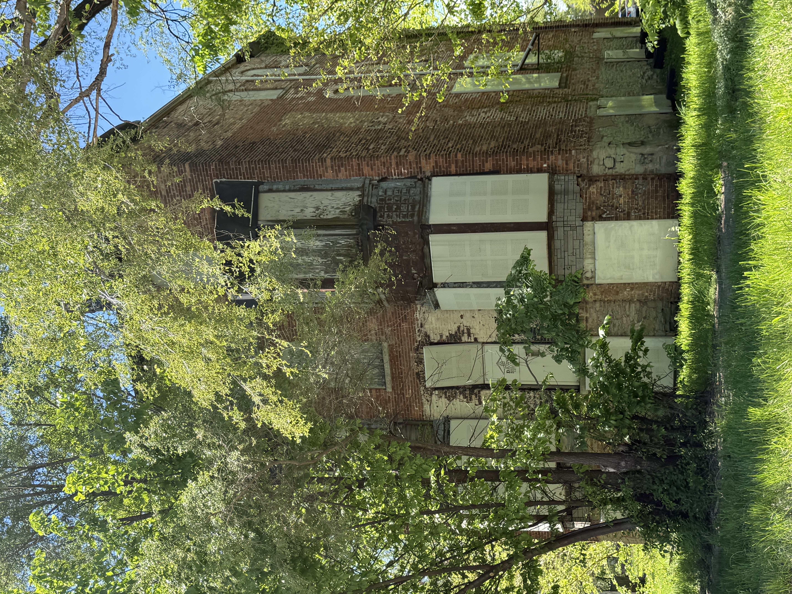
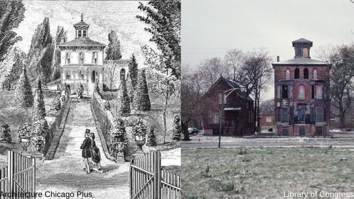
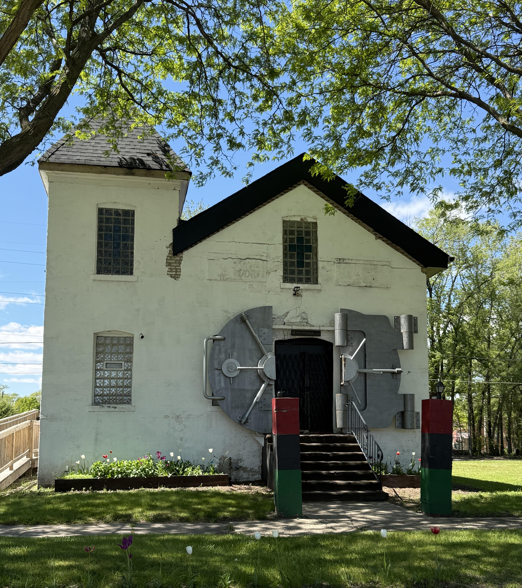
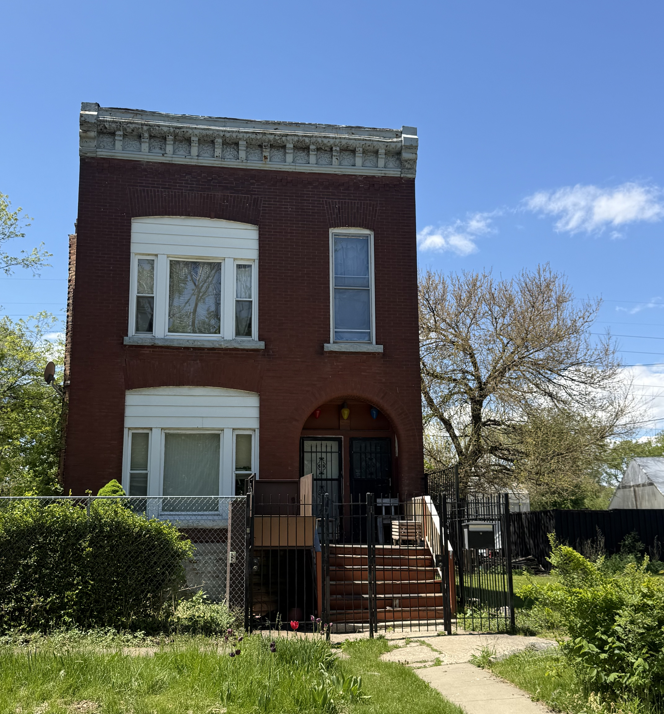
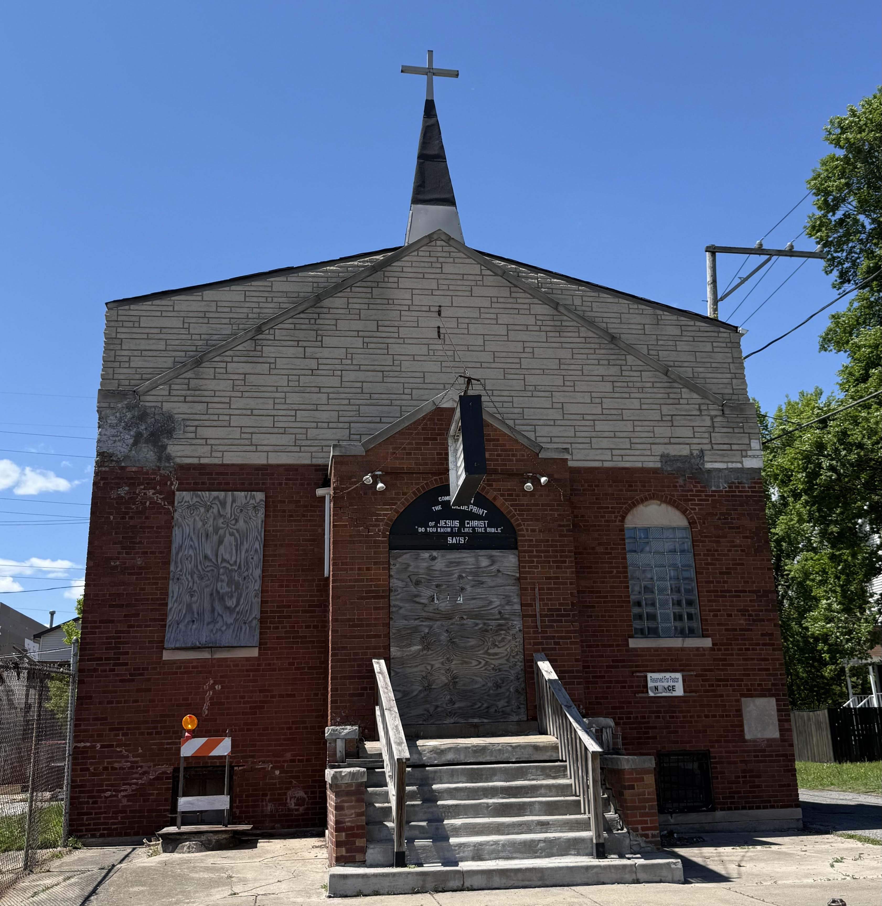
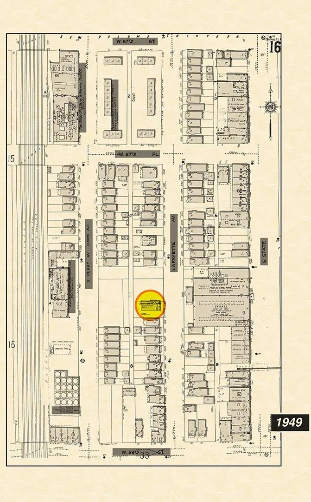
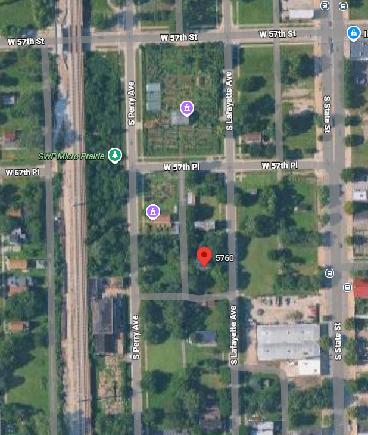
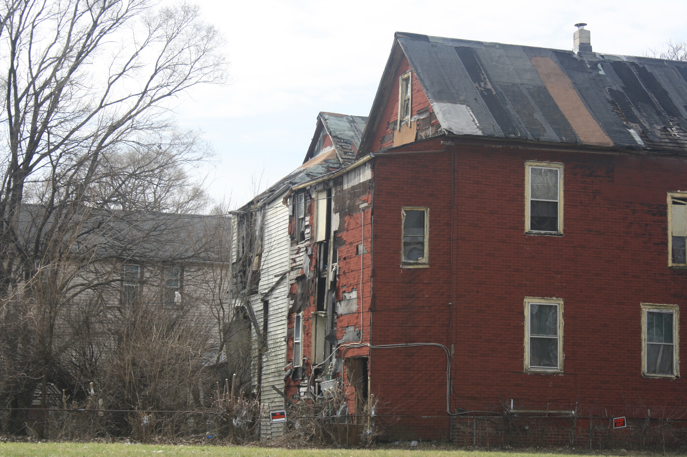
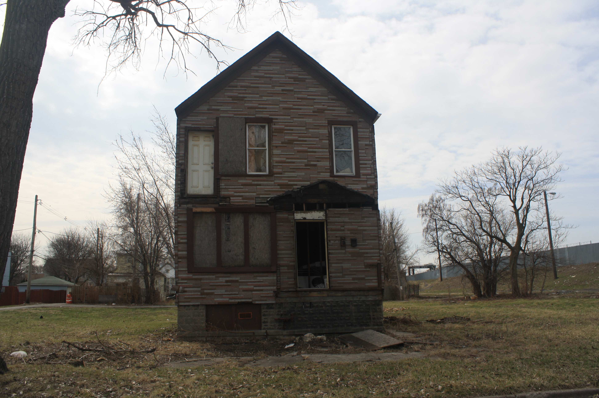
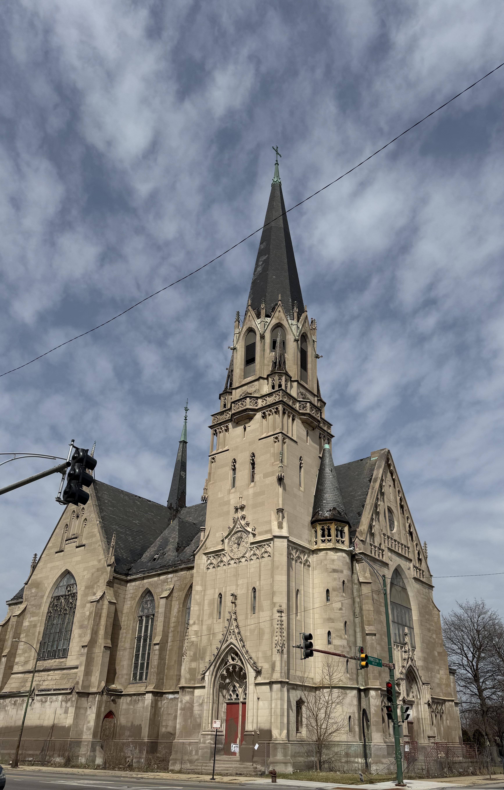

Chicago Built Environment
This page features my photography and observations of Chicago's built environment, including architecture, public spaces, and neighborhoods.
I've been volunteering with Nourishing Hope for over a year. Since November, I've been delivering meals on Chicago's South and West side neighborhoods and was amazed by how diverse this city is and how the same street and address on the North side can have a very different twin on the South side. I became interested in the urban landscapes and how they reflect the history of changing industries and urban planning that was supposed to make connections but for people living in Chicago's south and west neighborhoods, these projects often literally divided neighbors and made Chicago more segregated. By visiting these neighborhoods, I saw how beautiful the houses had been and how grand the streets used to be. I could see how the decline of certain industries closed down train lines and made some neighborhoods less populated and less desirable. I learned about redlining and how inequality transformed neighborhoods from vibrant centers to empty lots. I also saw how urban planning to serve certain industries (like the Pullman District) created different kinds of urban landscapes. This page explores Chicago history through photographs of the built environment to show how infrastructure projects like the Dan Ryan, and housing policies like redlining, shaped Chicago's neighborhoods in different ways. This photo essay contains my reflections on how these policies shaped our city and its neighborhood.
Bronzeville

Photo 1: The Hammer-Palmer Mansion was built in 1885 and is located at 3654-3656 Martin Luther King Drive.

Photo 2: The building was originally owned by Justice Henry Hammer and later by the African American activist Lu Palmer. The mansion is now known by both names.

Photo 3: The mansion has been empty for several years now and is in need of restoration.

Photo 4: Beautiful isolated building near the corner of 51st and Wabash reflecting disinvestment in the area around Washington Park.

Photo 5: Vacant firehouse showing how some buildings have been left unused over time.

Photo 6: Elevated train tracks along 40th showing how transportation infrastructure cuts through the neighborhood.
In Bronzeville, I noticed how much history is still visible in the buildings. The Hammer-Palmer Mansion especially stood out because it shows how grand and carefully designed some of these homes once were. The scale and detail of the mansion reflect Bronzeville’s historic importance and the wealth and ambition that shaped parts of the neighborhood in the past.
At the same time, the isolated house, the vacant firehouse, and the elevated train tracks show a different side of the neighborhood. These images reflect uneven investment and the ways that loss, disinvestment, and infrastructure have reshaped the area over time. Bronzeville still holds onto a strong identity, but the built environment clearly shows both preservation and change.
Stockyards

Photo 1: Train infrastructure supporting industry.

Photo 2: Entry gate marking industrial history of Chicago.
The Stockyards landscape reflects Chicago’s industrial past and infrastructure.
Washington Park

Photo 1: John Raber House today. Located at 5760 S. Lafayette Ave, this is an Italianate-style home that was built in the 19th century for a wealthy Chicago businessman named John Raber.

Photo 2: This is a sketch of what the John Raber house was like in 1870.

Photo 3: This had been an abandoned church at 5810 S. Lafayette Avenue. It was purchased by the Sweet Water Foundation in 2020 and turned into a community center to help revitalize the neighborhood.

Photo 4: An isolated residence a few lots away from the John Raber house.

Photo 5: An abandoned church at the end of Lafayette Street.
During my most recent trip to the south side of Chicago, I wanted to check out the Raber House in the Washington Park neighborhood. It was built in the nineteenth century and was once surrounded by ten acres of land. As Chicago grew and changed and the “L” tracks were built, a lot of people moved into the area. As you can see on this map from 1949, it was a densely populated neighborhood. But when the Great Migration brought hundreds of thousands of African Americans to Chicago, redlining and other forms of discrimination forced most of these families into the Black Belt. And a lot of the buildings on this street were then carved up into apartments and eventually when the Robert Taylor homes were built, a lot of these homes were demolished. When the Dan Ryan Expressway was built, this street was isolated from the rest of the neighborhood and the area was almost completely abandoned.

Map 1: A 1949 map showing the dense built environment that once surrounded the Raber House and Lafayette Avenue.

Map 2: Modern aerial view showing large empty spaces and population loss in the neighborhood today.
When you drive down this street now, it feels mostly empty. But what really interests me is the Civic Arts Center, which used to be a church for the African American community. A group called the Sweet Water Foundation bought the church and turned it into a space for meetings and to create community. They also organized the building of a huge community garden so they are using the spaces left over by disinvestment to revive the neighborhood. But it seems like a difficult task. Most people are interested in the Raber House because it was a symbol of Chicago’s gilded age and they don’t care as much about what the other spaces or the neighborhood mean for Chicago’s history and present. Seeing spaces and projects like this helps me understand how urban planning and housing policies can shape people’s lives and attitudes for generations.
Fuller Park

Photo 1: The Dan Ryan cut through the Fuller Park neighborhood separating neighbors and wedging this area between a massive highway and trains. This made the area less desirable and led to people leaving the neighborhood.

Photo 2: A Fuller Park home between two empty lots.

Photo 3: An isolated building in the Fuller Park neighborhood.

Photo 4: A now shuttered two-flat in the Fuller Park neighborhood.

Photo 5: Located at 5201 S. Princeton Ave, this was probably a corner store. It later became home to the Lodebar Church and is now for sale.

Photo 6: Empty lot where buildings once stood.

Photo 7: The overgrown sidewalks in Fuller Park.

Photo 8: Another sidewalk view.

Photo 9: Streetscape showing gaps in the built environment.

Photo 10: Abandoned playground in Fuller Park.

Photo 11: Francis Parkman was one of many Chicago Public Schools to be closed down in 2013. The school’s closure was the result of families moving out of the neighborhood.

Photo 12: Princeton Elementary closed in 2008. The word “Hope” is still visible on the fence outside the shuttered school.
Fuller Park shows some of the clearest evidence of disinvestment. Many buildings remain, but they are often isolated or surrounded by empty lots. Infrastructure like the Dan Ryan physically divides the neighborhood, and the built environment reflects long-term economic change. At the same time, schools, churches, and community spaces show that this is still a lived-in and active neighborhood, demonstrating both loss and resilience.
Englewood

Photo 1: This church is located at 5848 S. Princeton Avenue and had served the German Catholic community of Englewood and then the African-American community before closing in 1989.

Photo 2: Now located between the Dan Ryan and the train lines, St. Martin de Tours is a victim of disinvestment.
Pullman

Photo 1: Mansion in Pullman showing the scale and planning of the neighborhood.

Photo 2: Rowhouse.

Photo 3: Rows of uniform housing.

Photo 4: District sign marking Pullman as a historic and planned community.

Photo 5: Industrial factory site.

Photo 6: Mural celebrating the history of Pullman.
Pullman stands out because it was designed as a company town, and that planning is still visible in the neighborhood today. The homes and streets feel organized in a way that reflects the goals of industry and control. At the same time, the area is beautiful, with historic buildings that show how much care once went into shaping the neighborhood. Looking at Pullman made me think about how work, housing, and city design were closely connected in Chicago’s industrial past.
Roseland

Photo 1: Joy Fellowship Baptist Church in Roseland.

Photo 2: Residential home highlighting the distinctive hilly landscape of Roseland.

Photo 3: Roseland was once called the Jewel of the South Side but the decline of industry, disinvestment, and the Covid pandemic has devastated this neighborhood.
Roseland has experienced a lot of changes. The houses and streets of Roseland are empty and the area has experienced a lot of decline in the last 40 years. Community members are optimistic that the Red Line extension will help revive Roseland. Like in other South Side neighborhoods, you can see how larger systems like housing policy and economic shifts have shaped what the neighborhood looks like today.
Conclusion
Across neighborhoods, Chicago’s built environment reflects history, inequality, and resilience. From industrial infrastructure to empty lots and preserved architecture, the city shows how policy and economic change shape physical space over time.